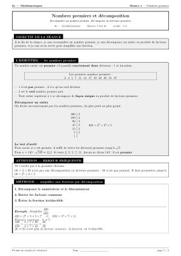
Séance 1
Nombres premiers et décomposition
Reconnaître un nombre premier, décomposer en facteurs premiers
Revoir le programme et préparer le brevet. 149 fiches en PDF, gratuites, avec leurs corrigés.
Deux pages en noir et blanc, faciles à imprimer : l’essentiel du cours, une méthode, des exercices progressifs et un défi. Les corrigés sont regroupés à part, par lots de dix séances.

Reconnaître un nombre premier, décomposer en facteurs premiers
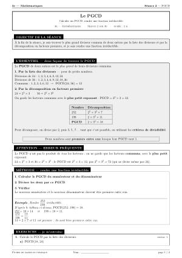
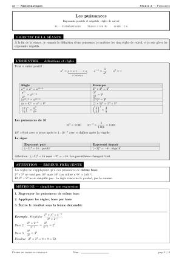
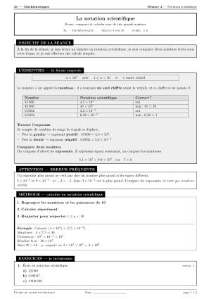
Écrire, comparer et calculer avec de très grands nombres
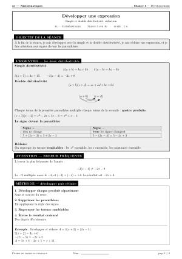
Simple et double distributivité, réduction
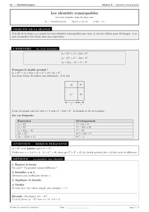
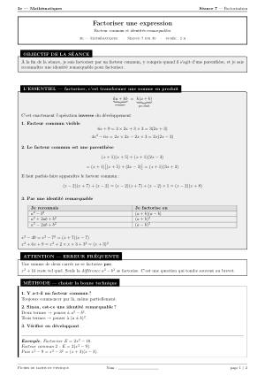
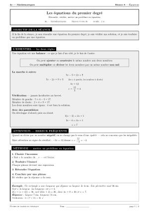
Résoudre, vérifier, mettre un problème en équation
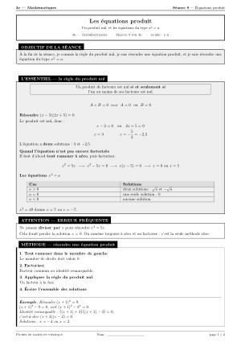
Un produit nul, et les équations du type x² = a
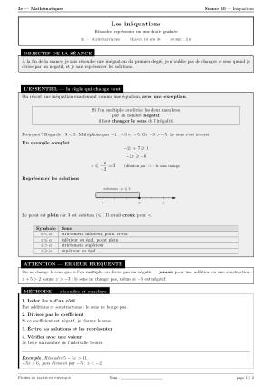
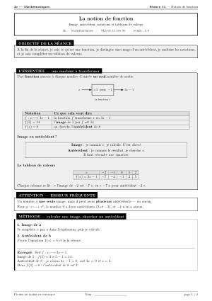
Image, antécédent, notations et tableaux de valeurs
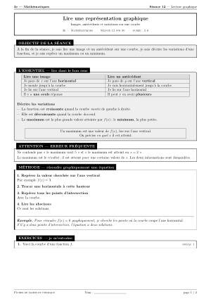
Images, antécédents et variations sur une courbe
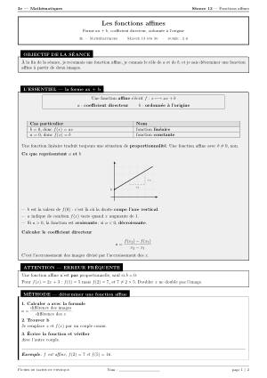
Forme ax + b, coefficient directeur, ordonnée à l'origine
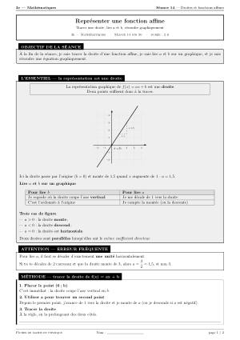
Tracer une droite, lire a et b, résoudre graphiquement
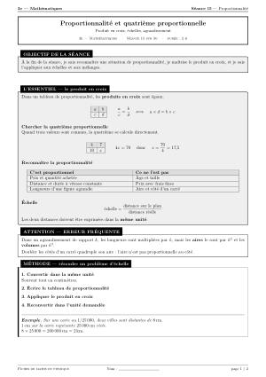
Produit en croix, échelles, agrandissement
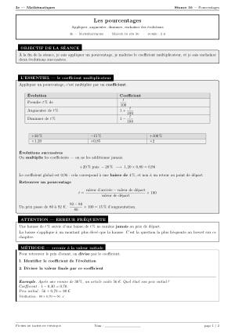
Appliquer, augmenter, diminuer, enchaîner des évolutions
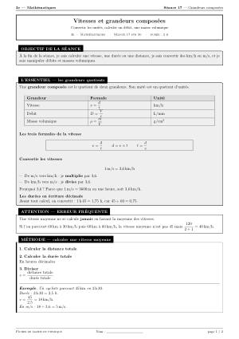
Convertir les unités, calculer un débit, une masse volumique
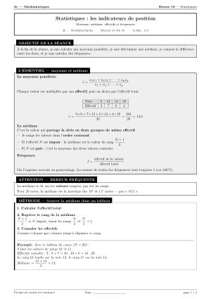
Moyenne, médiane, effectifs et fréquences
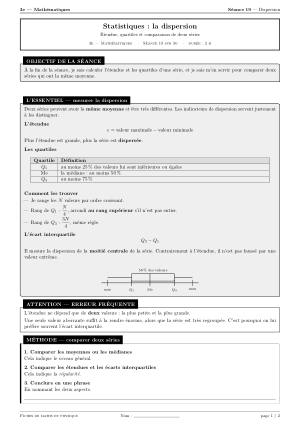
Étendue, quartiles et comparaison de deux séries
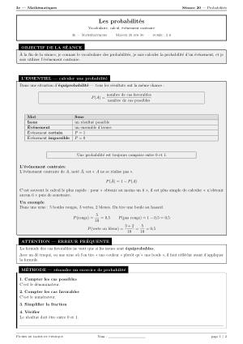
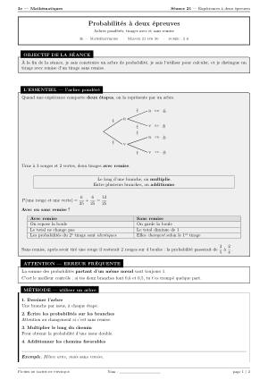
Arbres pondérés, tirages avec et sans remise
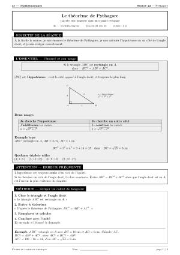
Calculer une longueur dans un triangle rectangle
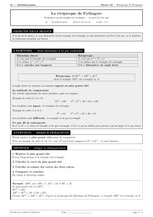
Démontrer qu'un triangle est rectangle — ou qu'il ne l'est pas
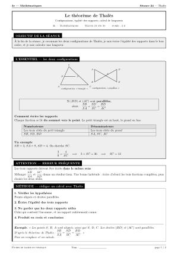
Configurations, égalité des rapports, calcul de longueurs
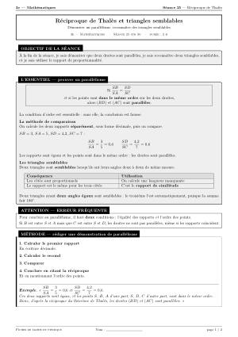
Démontrer un parallélisme, reconnaître des triangles semblables
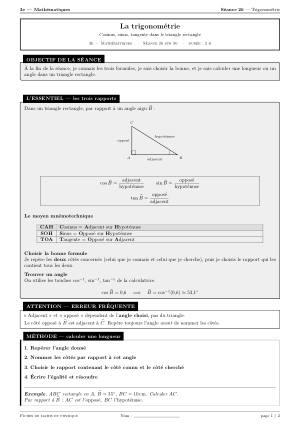
Cosinus, sinus, tangente dans le triangle rectangle
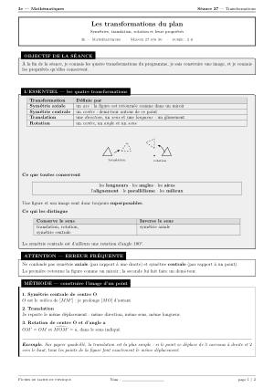
Symétries, translation, rotation et leurs propriétés
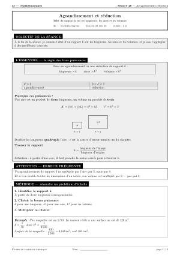
Effet du rapport k sur les longueurs, les aires et les volumes
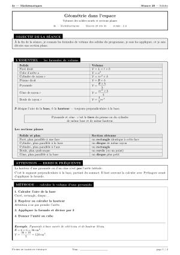
Volumes des solides usuels et sections planes
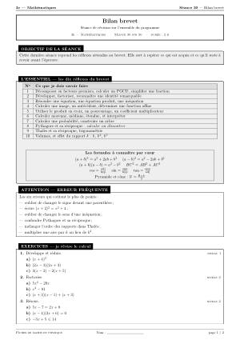
Cours, méthodes, pièges fréquents et exercices de difficulté croissante, avec des corrigés détaillés à la fin de chaque fiche.
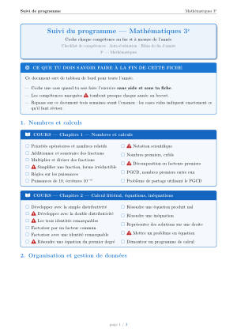
Coche chaque compétence au fur et à mesure de l'année
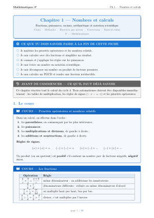
Fractions, puissances, racines, arithmétique et notation scientifique
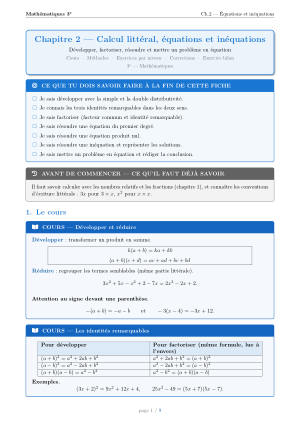
Développer, factoriser, résoudre et mettre un problème en équation
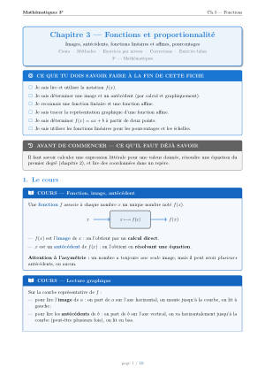
Images, antécédents, fonctions linéaires et affines, pourcentages
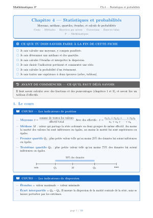
Moyenne, médiane, quartiles, étendue, et calculs de probabilités
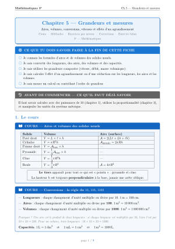
Aires, volumes, conversions, vitesses et effets d'un agrandissement
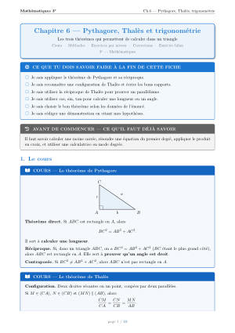
Les trois théorèmes qui permettent de calculer dans un triangle
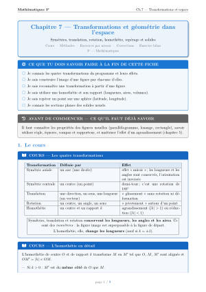
Symétries, translation, rotation, homothétie, repérage et solides
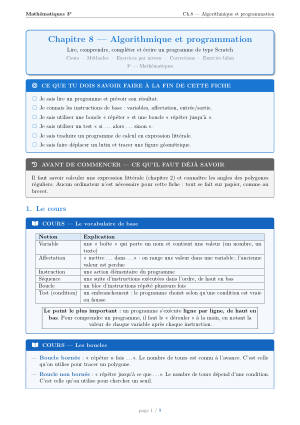
Lire, comprendre, compléter et écrire un programme de type Scratch
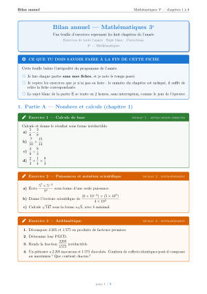
Une feuille d'exercices reprenant les huit chapitres de l'année
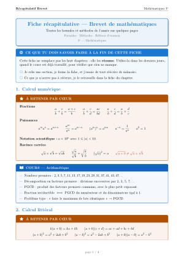
Toutes les formules et méthodes de l'année sur quelques pages
Pour vérifier que le cours est su, question par question. Les réponses sont dans un document à part.
Deux pages en noir et blanc, faciles à imprimer : l’essentiel du cours, une méthode, des exercices progressifs et un défi. Les corrigés sont regroupés à part, par lots de dix séances.
Solide, liquide, gaz : ce qui change et ce qui ne change pas
Identifier une substance, prévoir si un objet flotte
Corps pur ou mélange ; jusqu'où peut-on dissoudre ?
Lire une formule chimique, utiliser la classification
Un noyau minuscule, des électrons, beaucoup de vide
Quand un atome gagne ou perd des électrons ; reconnaître un ion par un test
Reconnaître et prouver une transformation chimique
Les atomes se réarrangent : rien ne se perd
Le feu, le climat et la rouille
Ce qui rend une solution acide ou basique
Galaxies, étoiles, planètes ; d'où vient la matière ?
Par rapport à quoi ? Quelle trajectoire ? Plus vite ou moins vite ?
v = d/t et ses variantes, les conversions d'unités
Contact ou distance ; le diagramme objet-interaction
Quatre caractéristiques, une flèche à l'échelle
Deux masses s'attirent, partout dans l'Univers
Sources, convertisseurs et chaînes énergétiques
E_c = 12mv^2 : pourquoi la vitesse tue
Rien ne se perd ; E = P × t ; l'effet de serre
Schématiser, reconnaître, mesurer
P = U × I, la facture et les dangers du courant
Voir, ombres, vitesse de la lumière, rayonnements
Cours, méthodes, pièges fréquents et exercices de difficulté croissante, avec des corrigés détaillés à la fin de chaque fiche.
Solide, liquide, gaz ; changements d'état ; corps purs et mélanges ; solubilité ; composition de l'air ; masse volumique
Éléments et classification périodique ; formules des molécules ; constitution de l'atome et du noyau ; ions ; tests d'identification des ions
Transformation physique ou chimique ; tests d'identification ; redistribution des atomes et équation de réaction ; conservation de la masse ; combustions ; corrosion
Le pH et sa mesure ; ions H^+ et HO^- ; dilution ; réaction des acides avec les métaux ; neutralisation ; sécurité ; acidification des océans
Structure de l'Univers et du système solaire ; distances et année-lumière ; histoire de l'Univers ; origine des éléments ; ressources de la Terre
Relativité du mouvement ; trajectoires ; vitesse (direction, sens, valeur) ; mouvements uniformes, accélérés, ralentis ; calculs avec v = d/t
Actions de contact et à distance ; interactions et diagramme objet-interaction ; modéliser par une force ; représenter et mesurer une force ; équilibre de deux forces
L'interaction gravitationnelle ; la loi de gravitation universelle ; le poids P = m g ; masse et poids ; pesanteur sur la Terre et ailleurs ; l'impesanteur
Formes et sources d'énergie ; chaînes énergétiques ; conservation de l'énergie ; énergie cinétique et sécurité routière ; puissance ; rayonnement et effet de serre
Circuits en série et en dérivation ; intensité et tension ; lois des circuits ; loi d'Ohm ; puissance P = U × I ; énergie et facture ; sécurité électrique
Production et propagation du son ; vitesse et distance ; écho et sonar ; période et fréquence ; sons audibles, infrasons et ultrasons ; risques auditifs
Sources et objets diffusants ; voir un objet ; propagation rectiligne et rayon lumineux ; ombres ; vitesse de la lumière ; autres rayonnements ; lumière et information ; sécurité
Tout le programme du cycle 4 : formules, unités, définitions, tests, méthodes et pièges
Au collège en vélo à assistance électrique
Deux pages en noir et blanc, faciles à imprimer : l’essentiel du cours, une méthode, des exercices progressifs et un défi. Les corrigés sont regroupés à part, par lots de dix séances.
Ce que représente une fraction, fractions égales, simplifier
Même dénominateur, puis dénominateurs différents
Deux règles simples, plus faciles que l'addition
Additions et soustractions avec les nombres négatifs
La règle des signes, une fois pour toutes
À quoi sert une lettre, comment l'écrire, comment la remplacer
La distributivité, et le piège du signe moins
La balance : ce qu'on fait d'un côté, on le fait de l'autre
Traduire un énoncé en calcul, puis résoudre
Reconnaître, compléter un tableau, le produit en croix
Calculer un pourcentage, une réduction, une augmentation
Deux applications directes de la proportionnalité
Ce que veut dire le symbole, et comment s'en servir
Lire une image et un antécédent sur une courbe
Calculer une longueur dans un triangle rectangle
Des longueurs proportionnelles dans deux triangles
Cosinus, sinus, tangente dans le triangle rectangle
Cours, méthodes, pièges fréquents et exercices de difficulté croissante, avec des corrigés détaillés à la fin de chaque fiche.
Comprendre, simplifier, additionner et soustraire des fractions
Comprendre à quoi sert le « x », remplacer, réduire, distribuer
La balance qui explique tout : résoudre x+a=b, ax=b, ax+b=c
Le module le plus simple de la série : ×, , et « la fraction d'une quantité »
Double distributivité, identités remarquables et factorisation
Règle de trois, quatrième proportionnelle, pourcentages et évolutions
Comprendre le symbole x, calculer, simplifier, et appliquer Pythagore
Comprendre f(x), faire un tableau de valeurs, tracer et lire une droite
Les trois grands outils de la géométrie du brevet
Moyenne, médiane, étendue, et calculer une probabilité sans se tromper
Une feuille d'exercices reprenant les 10 modules de l'année